A more sophisticated method makes use of the hypotheses that the measured data is composed of the output of a low-dimensional dynamical system and of random or high-dimensional noise. This means that in an arbitrarily high-dimensional embedding space the deterministic part of the data would lie on a low-dimensional manifold, while the effect of the noise is to spread the data off this manifold. If we suppose that the amplitude of the noise is sufficiently small, we can expect to find the data distributed closely around this manifold. The idea of the projective nonlinear noise reduction scheme is to identify the manifold and to project the data onto it. The strategies described here go back to Ref. [61]. A realistic case study is detailed in Ref. [62].
Suppose the dynamical system, Eq. ( ) or Eq. (
) or Eq. ( ), form a
q-dimensional manifold 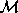 containing the trajectory. According to the
embedding theorems, there exists a one-to-one image of the attractor
in the embedding space, if the embedding dimension is sufficiently
high. Thus, if the measured time series were not corrupted with noise, all the
embedding vectors
), form a
q-dimensional manifold 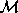 containing the trajectory. According to the
embedding theorems, there exists a one-to-one image of the attractor
in the embedding space, if the embedding dimension is sufficiently
high. Thus, if the measured time series were not corrupted with noise, all the
embedding vectors  would lie inside another manifold
would lie inside another manifold
 in the embedding space. Due to the noise
this condition is no longer fulfilled. The idea of the locally projective noise
reduction scheme is that for each
in the embedding space. Due to the noise
this condition is no longer fulfilled. The idea of the locally projective noise
reduction scheme is that for each  there exists a correction
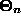, with 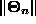 small, in such a way that 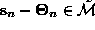 and that is orthogonal
on
there exists a correction
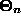, with 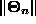 small, in such a way that 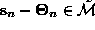 and that is orthogonal
on  . Of course a projection to the manifold can only be a
reasonable concept if the vectors are embedded in spaces which are higher
dimensional than the manifold
. Of course a projection to the manifold can only be a
reasonable concept if the vectors are embedded in spaces which are higher
dimensional than the manifold  . Thus we have to over-embed in
m-dimensional spaces with m>q.
. Thus we have to over-embed in
m-dimensional spaces with m>q.
The notion of orthogonality depends on the metric used. Intuitively one would
think of using the Euclidean metric. But this is not necessarily the best
choice. The reason is that we are working with delay vectors which contain
temporal information. Thus even if the middle parts of two delay
vectors are close, the late parts could be far away from each other due to the
influence of the positive Lyapunov exponents, while the first parts could
diverge due the negative ones. Hence it is usually desirable to correct only
the center part of delay vectors and leave the outer parts mostly unchanged,
since their divergence is not only a consequence of the noise, but also of the
dynamics itself. It turns out that for most applications it is sufficient to
fix just the first and the last component of the delay vectors and correct the
rest. This can be expressed in terms of a metric tensor 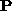 which we
define to be [61]
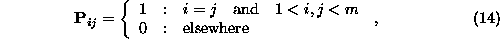
where m is the dimension of the ``over-embedded'' delay vectors.
Thus we have to solve the minimization problem
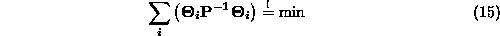
with the constraints
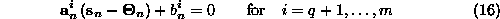
and
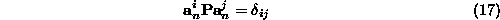
where the 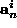 are the normal vectors of  at the point
at the point
 .
.
This ideas are realized in the programs ghkss, and project in
TISEAN. While the first two work as a posteriori filters on complete
data sets, the last one can be used in a data stream. This means that it is
possible to do the corrections online, while the data is coming in (for more
details see section  ). All three algorithms mentioned
above correct for curvature effects. This is done by either post-processing the
corrections for the delay vectors (ghkss) or by preprocessing the centres of
mass of the local neighborhoods (project).
). All three algorithms mentioned
above correct for curvature effects. This is done by either post-processing the
corrections for the delay vectors (ghkss) or by preprocessing the centres of
mass of the local neighborhoods (project).
The idea used in the ghkss program is the following. Suppose the manifold were strictly linear. Then, provided the noise is white, the corrections in the vicinity of a point on the manifold would point in all directions with the same probability. Thus, if we added all the corrections we expect them to sum to zero (or 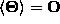). On the other hand, if the manifold is curved, we expect that there is a trend towards the centre of curvature (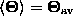). Thus, to correct for this trend each correction is replaced by 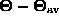.
A different strategy is used in the program project. The projections are
done in a local coordinate system which is defined by the condition that the
average of the vectors in the neighborhood is zero. Or, in other words, the
origin of the coordinate systems is the centre of mass 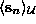 of the neighborhood  . This centre of mass has a
bias towards the centre of the curvature [2]. Hence, a
projection would not lie on the tangent at the manifold, but on a secant. Now
we can compute the centre of mass of these points in the neighborhood of
. This centre of mass has a
bias towards the centre of the curvature [2]. Hence, a
projection would not lie on the tangent at the manifold, but on a secant. Now
we can compute the centre of mass of these points in the neighborhood of  . Let us call it 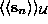. Under
fairly mild assumptions this point has twice the distance from the manifold
then . To correct for the bias the origin of
the local coordinate system is set to the point: 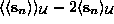.
. Let us call it 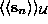. Under
fairly mild assumptions this point has twice the distance from the manifold
then . To correct for the bias the origin of
the local coordinate system is set to the point: 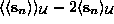.
The implementation and use of locally projective noise reduction as realized
in project and ghkss is described in detail in Refs. [61, 62].
Let us recall here the most important parameters that have to be set
individually for each time series. The embedding parameters are usually chosen
quite differently from other applications since considerable over-embedding may
lead to better noise averaging. Thus, the delay time is preferably set to unity
and the embedding dimension is chosen to provide embedding windows of
reasonable lengths. Only for highly oversampled data (like the
magneto-cardiogram, Fig.  , at about 1000 samples per cycle),
larger delays are necessary so that a substantial fraction of a cycle can be
covered without the need to work in prohibitively high dimensional spaces.
Next, one has to decide how many dimensions q to leave for the manifold
supposedly containing the attractor. The answer partly depends on the purpose
of the experiment. Rather brisk projections can be optimal in the sense of
lowest residual deviation from the true signal. Low rms error can however
coexist with systematic distortions of the attractor structure. Thus for a
subsequent dimension calculation, a more conservative choice would be in order.
Remember however that points are only moved towards the local linear
subspace and too low a value of q does not do as much harm as may be though.
, at about 1000 samples per cycle),
larger delays are necessary so that a substantial fraction of a cycle can be
covered without the need to work in prohibitively high dimensional spaces.
Next, one has to decide how many dimensions q to leave for the manifold
supposedly containing the attractor. The answer partly depends on the purpose
of the experiment. Rather brisk projections can be optimal in the sense of
lowest residual deviation from the true signal. Low rms error can however
coexist with systematic distortions of the attractor structure. Thus for a
subsequent dimension calculation, a more conservative choice would be in order.
Remember however that points are only moved towards the local linear
subspace and too low a value of q does not do as much harm as may be though.
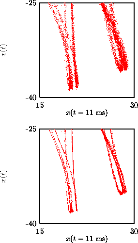
Figure: Two-dimensional representation of the NMR Laser data (top) and the result of the ghkss algorithm (bottom) after three iterations.
The noise amplitude to be removed can be selected to some degree by the choice of the neighborhood size. In fact, nonlinear projective filtering can be seen independently of the dynamical systems background as filtering by amplitude rather than by frequency or shape. To allow for a clear separation of noise and signal directions locally, neighborhoods should be at least as large as the supposed noise level, rather larger. This of course competes with curvature effects. For small initial noise levels, it is recommended to also specify a minimal number of neighbors in order to permit stable linearizations. Finally, we should remark that in successful cases most of the filtering is done within the first one to three iterations. Going further is potentially dangerous since further corrections may lead mainly to distortion. One should watch the rms correction in each iteration and stop as soon as it doesn't decrease substantially any more.
As an example for nonlinear noise reduction we treat the data obtained from an
NMR laser experiment [63]. Enlargements of two-dimensional delay
representations of the data are shown in Fig.  . The
upper panel shows the raw experimental data which contains about 1.1% of
noise. The lower panel was produced by applying three iterations of the noise
reduction scheme. The embedding dimension was m=7, the vectors were projected
down to two dimensions. The size of the local neighborhoods were chosen such
that at least 50 neighbors were found. One clearly sees that the fractal
structure of the attractor is resolved fairly well.
. The
upper panel shows the raw experimental data which contains about 1.1% of
noise. The lower panel was produced by applying three iterations of the noise
reduction scheme. The embedding dimension was m=7, the vectors were projected
down to two dimensions. The size of the local neighborhoods were chosen such
that at least 50 neighbors were found. One clearly sees that the fractal
structure of the attractor is resolved fairly well.
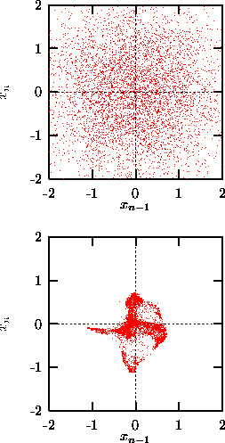
Figure: Two-dimensional representation of a pure Gaussian process (top) and the outcome of the ghkss algorithm (bottom) after 10 iterations. Projections from m=7 down to two dimensions were performed.
The main assumption for this algorithm to work is that the data is well
approximated by a low-dimensional manifold. If this is not the case it is
unpredictable what results are created by the algorithm. In the absence of a
real manifold, the algorithm must pick statistical fluctuations and spuriously
interprets them as structure. Figure  shows a result
of the ghkss program for pure Gaussian noise. The upper panel shows a delay
representation of the original data, the lower shows the outcome of applying
the algorithm for 10 iterations. The structure created is purely artifical and
has nothing to do with structures in the original data. This means that if one
wants to apply one of the algorithms, one has to carefully study the results.
If the assumptions underlying the algorithms are not fulfilled in principle
anything can happen. One should note however, that the performance of the
program itself indicates such spurious behavior. For data which is indeed well
approximated by a lower dimensional manifold, the average corrections applied
should rapidly decrease with each successful iteration. This was the case with
the NMR laser data and in fact, the correction was so small after three
iteration that we stopped the procedure. For the white noise data, the
correction only decreased at a rate that corresponds to a general shrinking of
the point set, indicating a lack of convergence towards a genuine low
dimensional manifold. Below, we will give an example where an approximating
manifold is present without pure determinism. In that case, projecting onto the
manifold does reduce noise in a reasonable way. See Ref. [64] for
material on the dangers of geometric filtering.
shows a result
of the ghkss program for pure Gaussian noise. The upper panel shows a delay
representation of the original data, the lower shows the outcome of applying
the algorithm for 10 iterations. The structure created is purely artifical and
has nothing to do with structures in the original data. This means that if one
wants to apply one of the algorithms, one has to carefully study the results.
If the assumptions underlying the algorithms are not fulfilled in principle
anything can happen. One should note however, that the performance of the
program itself indicates such spurious behavior. For data which is indeed well
approximated by a lower dimensional manifold, the average corrections applied
should rapidly decrease with each successful iteration. This was the case with
the NMR laser data and in fact, the correction was so small after three
iteration that we stopped the procedure. For the white noise data, the
correction only decreased at a rate that corresponds to a general shrinking of
the point set, indicating a lack of convergence towards a genuine low
dimensional manifold. Below, we will give an example where an approximating
manifold is present without pure determinism. In that case, projecting onto the
manifold does reduce noise in a reasonable way. See Ref. [64] for
material on the dangers of geometric filtering.